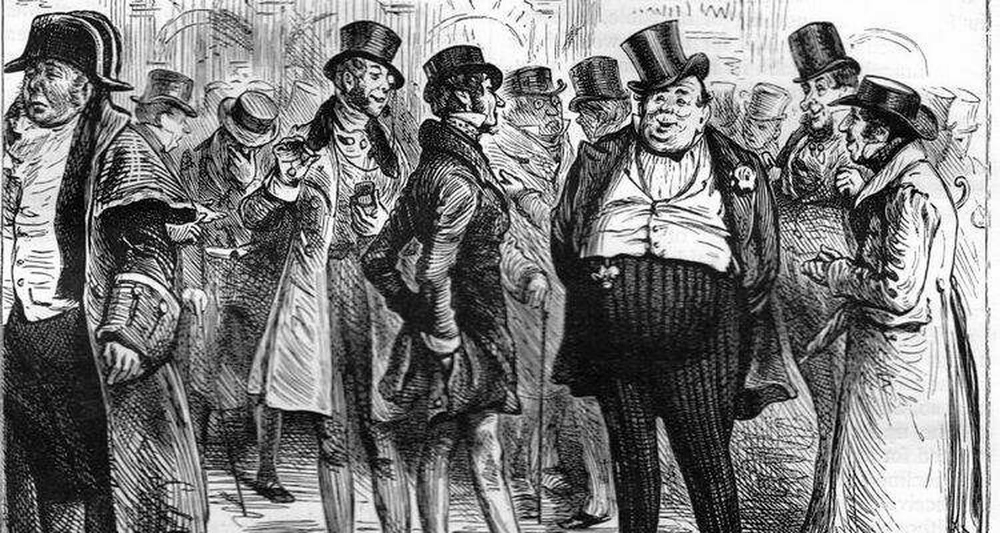

Um espectro ronda a Europa — o espectro do comunismo.Manifesto Comunista, 1848
Você é contra o comunismo?
Mas você sabe o que é?

Burguesia é quem é dono dos meios de produção.
Proletariado é quem só tem o próprio trabalho pra vender.
Meios de produção são fábricas, máquinas, terras e ferramentas. Tudo que se usa para produzir, mas que não produz nada sozinho.